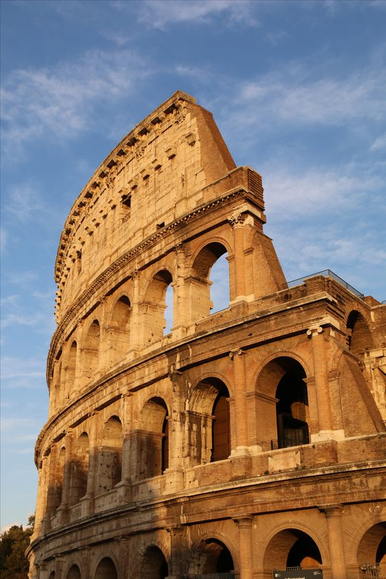
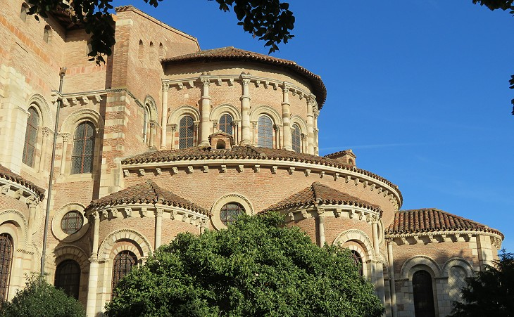
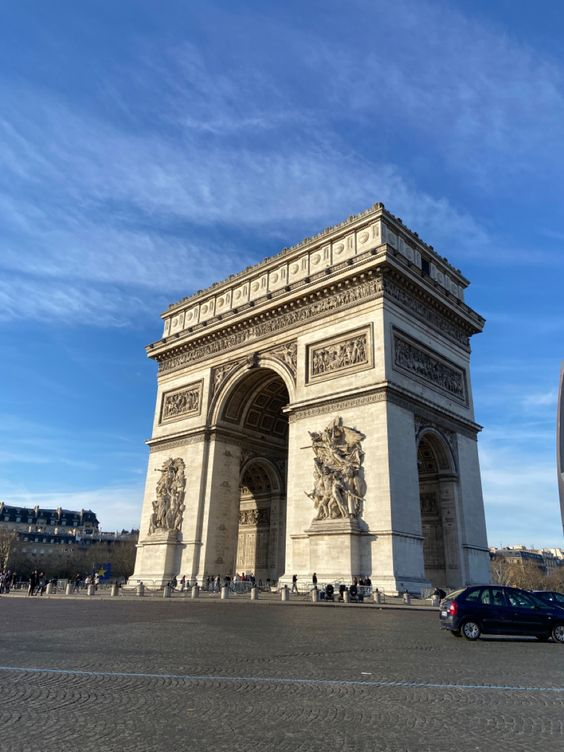
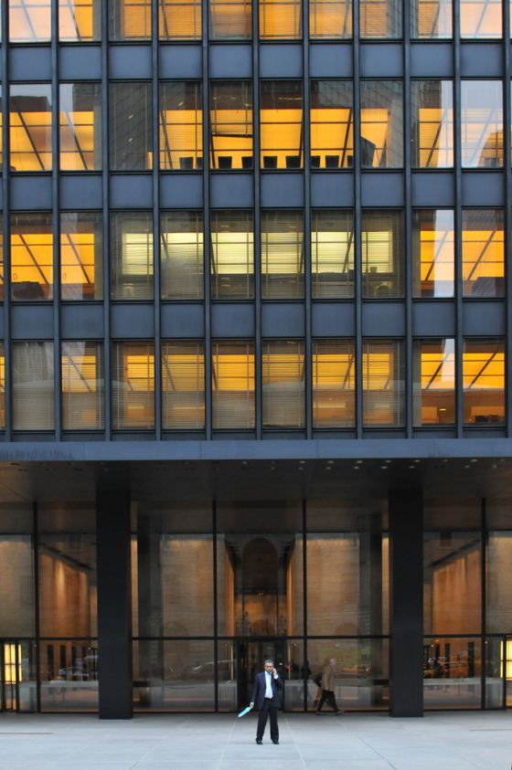
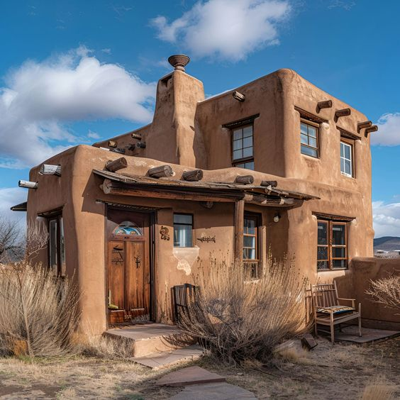
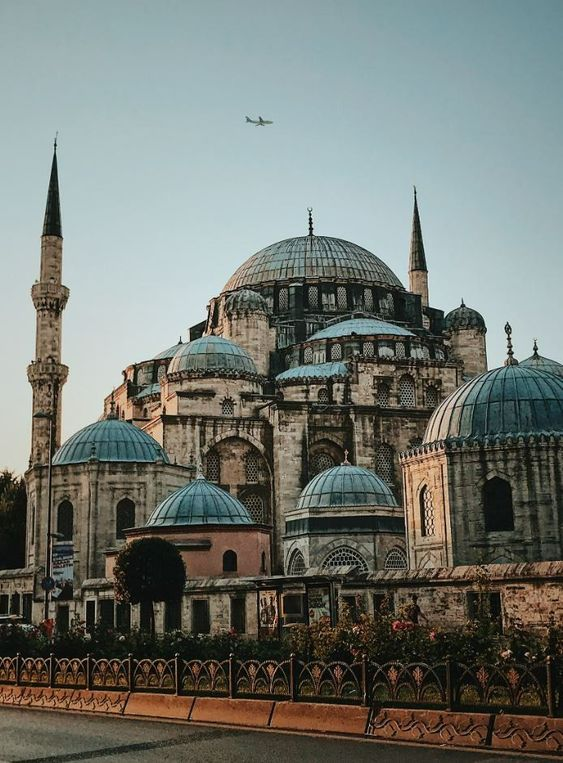

- Arquitetura Grega:
A arquitetura grega é marcada pela beleza e proporção, destacando três ordens: dórica (simples e robusta), jônica (esbelta e decorativa) e coríntia (elaborada e ornamentada). Os templos, como o Partenon, são exemplos icônicos, além de teatros e ágoras, que refletiam a vida social e cultural da época. Essa arquitetura influenciou profundamente a estética ocidental.
- Arquitetura Romana:
A arquitetura romana é caracterizada pela grandiosidade e inovação, utilizando arcos, abóbadas e concreto. Construções icônicas incluem o Coliseu, aquedutos e banhos públicos, que refletiam a vida social e cultural. Seu estilo monumental influenciou profundamente a arquitetura ocidental, especialmente no neoclassicismo.

ARQUITETURA MEDIEVAL
- Arquitetura Românica:
A arquitetura romântica, popular no século XIX, destaca-se pela ênfase na emoção e na natureza, inspirando-se em estilos históricos como o gótico. Utiliza arcos pontiagudos, torres e ornamentação elaborada, buscando harmonia com o ambiente natural.

- Arquitetura Gótica:
A arquitetura gótica, que predominou na Europa entre os séculos XII e XVI, é caracterizada por altos edifícios, arcos ogivais, abóbadas de nervuras e grandes vitrais. Essa estilo visava criar uma sensação de verticalidade e luz, refletindo a espiritualidade da época. Catedrais como Notre-Dame em Paris e a Catedral de Chartres são exemplos icônicos, apresentando detalhadas esculturas e fachadas impressionantes. A arquitetura gótica influenciou profundamente a construção de igrejas e catedrais, deixando um legado duradouro na história da arquitetura.

ARQUITETURA RENASCENTISTA
A arquitetura renascentista, que surgiu entre os séculos XV e XVI, destaca-se pela harmonia, proporção e simetria, inspirada na Grécia e Roma antigas. Utiliza colunas, arcos de volta perfeita e cúpulas, além de enfatizar a perspectiva e a luz natural. Exemplos notáveis incluem a Basílica de São Pedro e o Palazzo Farnese. Essa estética influenciou profundamente a arquitetura ocidental.

ARQUITETURA BARROCA
A arquitetura barroca, desenvolvida entre os séculos XVII e XVIII, é marcada pela exuberância e ornamentação, com ênfase na dramaticidade. Utiliza curvas, colunas elaboradas e fachadas ricamente decoradas, além de interiores adornados com afrescos. Exemplos icônicos incluem a Basílica de São Pedro e o Palácio de Versalhes, buscando criar um forte impacto visual.

ARQUITETURA NEOCLASSICA
A arquitetura neoclássica, que surgiu no final do século XVIII, é marcada pela simplicidade e pela inspiração em formas clássicas da Grécia e Roma. Suas principais características incluem formas simples e claras, o uso de elementos clássicos como colunas e simetria, além da preferência por materiais como pedra e mármore. Exemplos notáveis desse estilo são o Panteão de Paris e o Capitólio dos EUA. Essa abordagem estética reflete uma busca por ordem e razão, influenciando a arquitetura que veio a seguir.

ARQUITETURA DO SÉCULO XIX E INICIO DO SÉCULO XX
- Arquitetura Vitoriana:
A arquitetura vitoriana, que floresceu durante o reinado da rainha Vitória (1837-1901), é caracterizada pela diversidade de estilos, como o gótico revivido e o românico. Destaca-se pela ornamentação rica, fachadas elaboradas, tectos altos e janelas grandes, criando interiores luminosos. Exemplos notáveis incluem o Palácio de Buckingham. Esse estilo reflete a prosperidade da época e influenciou estilos arquitetônicos posteriores

- Arquitetura Arts and Crafts:
A arquitetura arts and crafts, surgida no final do século XIX, valoriza a artesania e materiais naturais, apresentando um estilo simples e funcional. Caracteriza-se pelo uso de pedra, madeira e vidro, com detalhes artesanais que destacam o trabalho manual. Exemplos notáveis incluem a Casa Red House e a arquitetura da região de Cotswolds. Esse movimento reflete uma reação à industrialização, promovendo autenticidade e conexão com a natureza.

- Arquitetura Neogótica:
A arquitetura neogótica, desenvolvida no século XIX, reviver os estilos góticos medievais. Caracteriza-se por arcos pontiagudos, vitrais, contrafortes e fachadas ornamentadas, sendo frequentemente associada a igrejas e instituições religiosas. Exemplos notáveis incluem o Palácio de Westminster, em Londres e a Biblioteca Bodleian. Esse estilo reflete uma busca por grandiosidade e espiritualidade.

- Arquitetura Modernista:
A arquitetura modernista foca na funcionalidade e simplicidade, evitando ornamentação. Surge no século 20, impulsionada por mudanças sociais e tecnológicas, com movimentos como Bauhaus e estilo Internacional. Exemplos notáveis incluem o edifício Seagram em Nova York e a Villa Savoye de Le Corbusier.

ARQUITETURA CONTEMPORÂNEA
- Arquitetura Pós-Moderna:
A arquitetura pós-moderna, surgida nas décadas de 1960 e 1970, reage ao modernismo, promovendo diversidade estética e ironia. Arquitetos como Robert Venturi e Michael Graves misturam estilos e referências históricas, destacando a complexidade e a pluralidade. Exemplos notáveis incluem o Edifício Vanna Venturi e o Museu Guggenheim de Bilbao.

- Arquitetura Desconstrutivista:
A arquitetura desconstrutivista, que surgiu na década de 1980, desafia normas tradicionais, criando edifícios com formas fragmentadas e não lineares. Inspirada por teorias filosóficas, busca uma estética de desordem. Arquitetos como Frank Gehry e Zaha Hadid são representantes notáveis, com o Museu Guggenheim de Bilbao sendo um exemplo icônico.

- Arquitetura Sustentável:
A arquitetura sustentável busca minimizar o impacto ambiental, promovendo eficiência energética e uso de materiais renováveis. Considera o ciclo de vida das construções, visando reduzir recursos e resíduos. Práticas comuns incluem captação de água da chuva e uso de energia solar. Arquitetos como Norman Foster são referências nessa área, que também foca em criar espaços saudáveis e que promovam o bem-estar.

ARQUITETURA REGIONAL E TRADICIONAL
- Arquitetura Vernacular:
A arquitetura vernacular consiste em construções tradicionais que refletem a cultura local, utilizando materiais e técnicas adaptados ao clima e ao ambiente. Exemplos incluem casas de adobe em regiões áridas e construções de madeira em áreas florestais. Valorizada por sua funcionalidade e sustentabilidade, essa arquitetura conecta-se à identidade cultural e à paisagem local.

- Arquitetura Islâmica:
A arquitetura islâmica é diversa e reflete as culturas locais, caracterizando-se por arcos, cúpulas e minaretes, além de padrões geométricos e caligrafia. Exemplos notáveis incluem a Mesquita de Al-Aqsa e a Alhambra. Essa tradição valoriza a água e os jardins, criando espaços de tranquilidade, abrangendo mesquitas e palácios.

ARQUITETURA HING-TECH
A arquitetura high-tech destaca-se pela incorporação de tecnologias avançadas e materiais industriais, surgindo na década de 1970. Caracteriza-se por estruturas expostas e sistemas tecnológicos à vista, como no Centro Pompidou, projetado por Richard Rogers e Renzo Piano. A abordagem une eficiência e estética de maneira inovadora.

ARQUITETURA FUTURISTA
A arquitetura futurista é um movimento que explora formas inovadoras, dinâmicas e não convencionais, refletindo ideias sobre tecnologia e progresso. Surgiu no início do século 20, influenciada pelo futurismo, que celebrava a velocidade e a modernidade. Caracteriza-se por linhas fluidas, formas orgânicas e o uso de novos materiais, como vidro e aço. A arquitetura futurista busca não apenas desafiar a estética tradicional, mas também imaginar como será a vida urbana no futuro. Exemplos notáveis como o Museu do futuro, em Dubai e a Casa da Música, em Porto